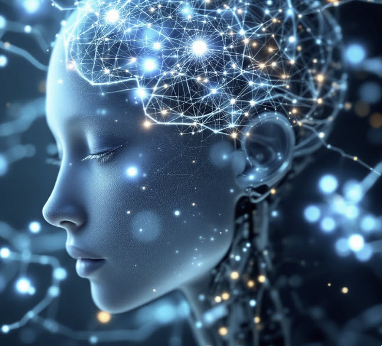

For most of history, interactions with machines were discrete. You sat down, did a task, disengaged. Now we've shifted from occasional computer use to persistent collaboration with systems that think with us.
There's a lot of conversation about when we'll reach artificial general intelligence (AGI) or superintelligence (ASI). Definitions vary, but they all point to an AI that can do whatever humans can do at least as well (AGI) or better (ASI). Will that lead to breakthroughs in medicine, or an AI takeover?
Good questions, but they assume the AI is working alone. Pair any individual human with AI, and the combination can now outperform any other individual human without it, across domains, simultaneously. That's not a tool. That's a new kind of system. And the system is more than the sum of its parts. We've already reached augmented superintelligence. The questions about what this means for society, the breakthroughs or the dystopia, are even more relevant because it's happening now, not in some speculative future.
And for me personally, I'm wondering what's happening to my own brain (or my kids' brains) while we think with machines, and what else is happening to our relationships, our work, our politics.
How I Got Here
I started thinking about this where many people do, 20th century sci-fi. Robocop, The Terminator, The Matrix. Fast forward to the 21st century and I see a man playing a video game using only his thoughts. The idea that we'd eventually merge with machines was now reality. Direct brain-computer interaction. That pulled me into the broader field of Human-Computer Interaction, an older field that studies how people and computers influence each other.

What I found is that this isn't just a technology story. It's a cognition story. The tech actively changes how we think, what we retain, and what we stop doing because the machine does it for us. Humans and AI are shaping each other in real time. That co-evolution is what I'm trying to understand.
What Happened Along the Way
I built a 17-page website as a research project. The idea was that building and synthesizing would force the material to stick in my head. The way grad school does.
It didn't really work. Partially because I didn't have the external pressure of a formal program. And in part because the tool was too good at doing the parts that would have made me struggle, and struggling is how learning happens.
The knowledge is still in the project. It's just not in my head. That's the risk of cognitive offloading (letting a tool handle cognitive work so you can focus on something else). It's not necessarily a bad thing. You offload routine processing and free up your brain for higher-order thinking. That's the promise. But the risk is what you lose in the trade, and that risk showed up in my own process while I was researching it. I knew it was a risk going in, designed the website project to counteract it, and it still wasn't enough. I became the case study.
And this is where the promise of augmented superintelligence meets its own limitation. The human in the system isn't a safety feature. It's a load-bearing component. If you stop doing your part of the work, evaluating, questioning, bringing judgment, the system breaks. It's not superintelligent anymore. It's just an AI generating plausible text for someone who stopped thinking.
Which raises questions I keep working on. What actually needs to live in your head, and what's okay to leave in the machine? Durable skills may be part of the answer, but they don't address foundational knowledge: what do we need to build and store before offloading, so there's something solid underneath to understand and evaluate the machine's output?
The Project
About a year ago, I used the deep research features of a few LLMs to explore how humans and machines shape each other. I'm an instructional designer, not a neuroscientist. This is a snapshot of what I found. The sources and research are linked within.
Full project: Thinking With Machines (unfinished), or explore by topic below.
Foundational Understanding
Evolution of Human-Computer Interactions — The history of how we've interacted with computers, from punch cards to conversational AI. Each shift changed not just what we could do with machines, but how we thought about using them.
Human Cognition and Learning — How the brain takes in, processes, and retains information. Attention, working memory, long-term memory, and what learning science tells us about how people actually learn (as opposed to how we assume they do).
Cognitive Maps and Mental Models — The internal representations we build to make sense of how things work. When AI builds those models for you, the question is whether you're still building your own.
AI and Co-Intelligence Fundamentals — The basics of how AI systems work and what it means to think alongside one. Not a technical deep dive into neural networks, but the conceptual foundation for what happens when human and machine intelligence start collaborating in real time.
Analytical Frameworks
HCI Theoretical Frameworks — The formal models researchers use to study how people interact with technology. These range from usability heuristics (is this easy to use?) to deeper questions about how tools shape cognition over time.
Cognitive Ergonomics — How well a system's design matches the mental capabilities and limitations of the person using it. Originally applied to high-stakes environments like air traffic control and nuclear power plants, now relevant every time you interact with an AI tool and have to decide whether to trust the output.
Human-AI Collaboration Models — Frameworks for how humans and AI work together. When do you defer to the machine? When do you override it? The centaur model (human judgment plus machine processing) is one answer, but it's not the only one.
Advanced Topics and Cross-Disciplinary Insights
Cybernetics and Systems Theory — The study of feedback loops between systems and their environments. You use AI, adjust your behavior based on its output, and it adjusts based on yours. That's a cybernetic loop, and it's the foundation for understanding co-evolution.
Complex Systems Science — How large systems with many interacting parts produce behavior you can't predict from the components. Education, labor markets, and the AI ecosystem are all complex systems. That's why simple predictions about AI's impact keep being wrong.
Embodied and Enactive Cognition — Thinking isn't just something that happens in your brain. It's shaped by your body, your environment, and your actions. This matters because more of our cognitive life is moving into disembodied, screen-based interactions, and that shift has consequences we're only starting to understand.
Applied Linguistics and Language Technologies — How human language works and how machines process it. Every conversation with ChatGPT or Claude is built on natural language processing, and the gap between how machines handle language and how humans do reveals what these tools actually understand (and don't).
Neuroscience and BCIs — Where I started. Brain-computer interfaces are the most literal version of human-machine co-evolution: direct communication between neural tissue and digital systems. Neuralink made this mainstream, but the field has been developing for decades.
Beyond HCI: Media, Power, and Persuasion — Human-AI interaction doesn't happen in a vacuum. Media ecology, science and technology studies, decision science, AR/VR, and persuasive technology all shape how these systems influence us. This is where the questions shift from "how do we use AI?" to "what does AI do to us, and who benefits?"
Futures and Foresight — Structured methods for thinking about what comes next. Not prediction. Scenario planning, horizon scanning, and frameworks for making decisions when you can't know the future but still have to prepare for it.
Broader Implications
Philosophical and Ethical Considerations — The questions that don't have technical answers. What does it mean to "know" something if an AI retrieved it for you? Who's responsible when human-AI collaboration produces a harmful outcome?
Societal Implications — How human-AI integration plays out at scale. Not individual users and their tools, but what happens to organizations, labor markets, education systems, and social structures when persistent AI collaboration becomes the default.